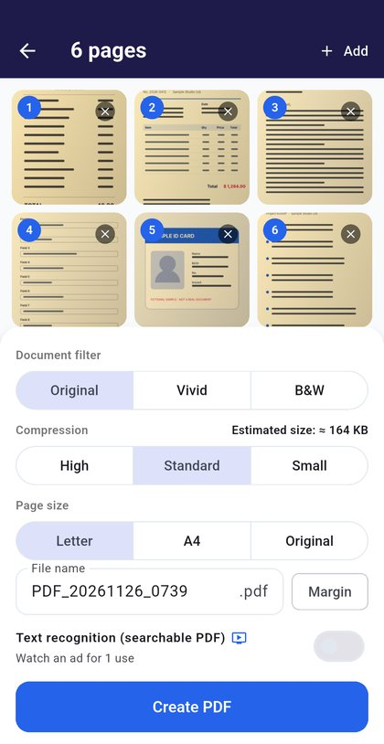
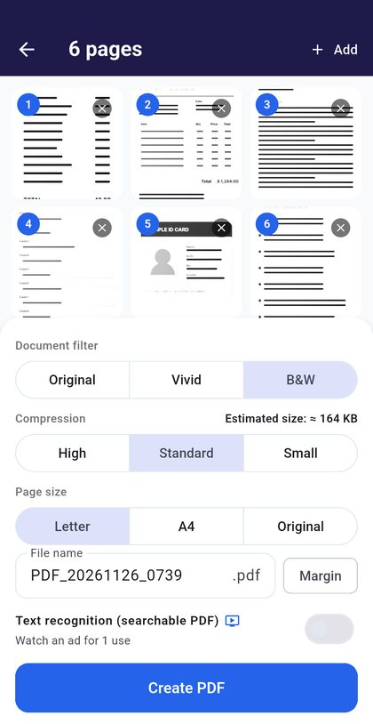
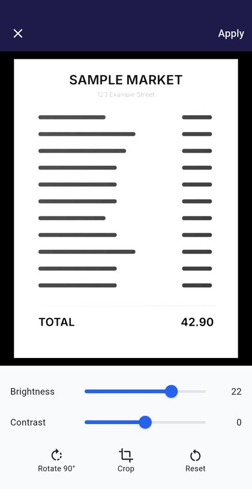
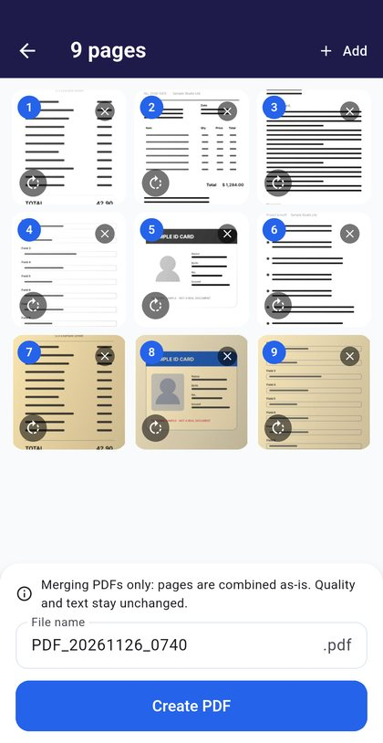
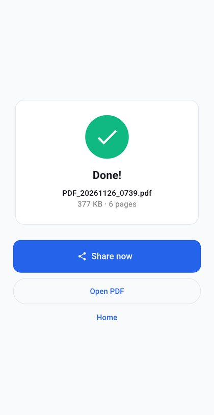

How it works이렇게 사용해요
- Pick or scan고르거나 스캔
Choose photos from your gallery, scan with the camera, or import PDFs.갤러리에서 사진을 고르거나, 카메라로 스캔하거나, PDF를 가져오세요. - Arrange & adjust정리하고 보정
Drag to reorder, then fix brightness, contrast, rotation or crop.드래그로 순서를 바꾸고, 밝기·대비·회전·자르기를 조정하세요. - Create & share만들고 공유
Pick a size, create the PDF and send it right away.용량을 고르고 PDF를 만든 뒤 바로 보내세요.
Screenshots스크린샷





Features주요 기능
Photos, scans and PDFs
사진·스캔·PDF
Pick many photos at once (no storage permission), scan documents with automatic edge detection, or import existing PDFs.
사진을 한 번에 여러 장 고르고(저장소 권한 불필요), 테두리 자동 인식으로 서류를 스캔하거나, 기존 PDF를 가져오세요.
Document filters
문서 필터
Original, Vivid or Black & White — great for receipts and contracts. Fine-tune brightness and contrast per page.
원본, 선명, 흑백 필터로 영수증·계약서를 또렷하게. 페이지마다 밝기와 대비도 조절할 수 있어요.
Size control
용량 선택
High, Standard or Small with an estimated size, so your PDF fits email and website upload limits.
고화질·표준·저용량 3단계와 예상 용량으로, 이메일이나 웹사이트의 용량 제한에 맞출 수 있어요.
Merge PDFs as they are
PDF 원본 그대로 합치기
When you combine only PDFs, pages are copied as they are — text and quality stay unchanged.
PDF만 합칠 때는 페이지를 그대로 복사해서 글자와 화질이 바뀌지 않아요.
Searchable PDF (English)
검색 가능한 PDF (영어)
Optional text recognition adds an invisible text layer so you can search and copy text in a PDF viewer.
선택 기능인 텍스트 인식으로 보이지 않는 글자 층을 더해, PDF 뷰어에서 글자를 검색하고 복사할 수 있어요.
Page setup
용지 설정
Letter (default), A4 or original size, optional margins and your own file name.
Letter(기본)·A4·원본 크기, 여백, 파일명 지정을 지원해요.
Free, with ads무료이며 광고가 있어요
QuickPDF is free. You can convert up to 20 pages at a time. Text recognition and going over 20 pages are optional: watch a short ad to use them once. A banner ad is shown on the home screen. There are no interstitial ads that interrupt your work, no subscriptions and no in-app purchases.
QuickPDF는 무료예요. 한 번에 최대 20장까지 변환할 수 있어요. 텍스트 인식과 20장 초과 변환은 선택 사항으로, 짧은 광고를 보면 한 번 사용할 수 있어요. 홈 화면 하단에는 배너 광고가 표시돼요. 작업을 방해하는 전면 광고, 구독, 앱 내 결제는 없어요.
Support지원
Questions, bug reports or ideas? Email us at YOUR_EMAIL@example.com. Please include your phone model and Android version.
질문, 오류 제보, 아이디어가 있나요? YOUR_EMAIL@example.com으로 보내 주세요. 폰 모델과 안드로이드 버전을 함께 알려 주시면 도움이 돼요.
Are my photos or PDFs uploaded anywhere?
제 사진이나 PDF가 어딘가로 업로드되나요?
No. Photos, scans and PDFs are processed on your device and are not sent to our servers (we do not run any). The internet is only used to load ads. See the Privacy Policy.
아니요. 사진, 스캔, PDF는 기기 안에서만 처리되고 저희 서버로 전송되지 않아요(서버 자체가 없어요). 인터넷은 광고를 불러올 때만 쓰여요. 개인정보 처리방침을 확인해 주세요.
How do I make the PDF smaller?
PDF 용량을 줄이려면 어떻게 하나요?
In the editor, choose Small under Compression. The estimated size is shown next to it.
편집 화면의 이미지 압축에서 저용량을 고르세요. 옆에 예상 용량이 표시돼요.
What does "watch an ad" unlock?
"광고 보기"로 무엇을 쓸 수 있나요?
Text recognition (English) and converting more than 20 pages. One completed ad gives one use. It is only used up when a conversion that used these features finishes.
텍스트 인식(영어)과 20장 초과 변환이에요. 광고를 끝까지 보면 한 번 쓸 수 있고, 이 기능을 쓴 변환이 끝났을 때만 소모돼요.
Can I open password-protected PDFs?
비밀번호가 걸린 PDF도 열 수 있나요?
Not yet. Password-protected PDFs are not supported.
아직 지원하지 않아요.
Which languages and page sizes are supported?
지원하는 언어와 용지 크기는요?
The app is available in English, Korean, Japanese and Spanish. Page sizes: Letter (default), A4 and original size.
영어, 한국어, 일본어, 스페인어를 지원하고, 용지는 Letter(기본)·A4·원본 크기를 선택할 수 있어요.